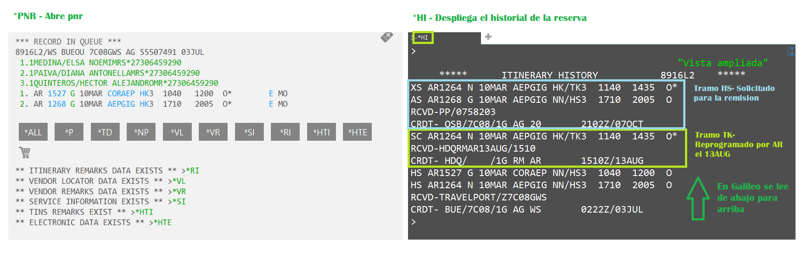
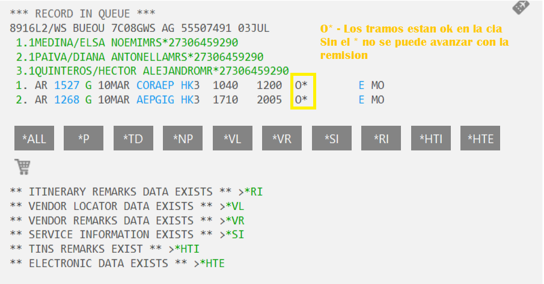
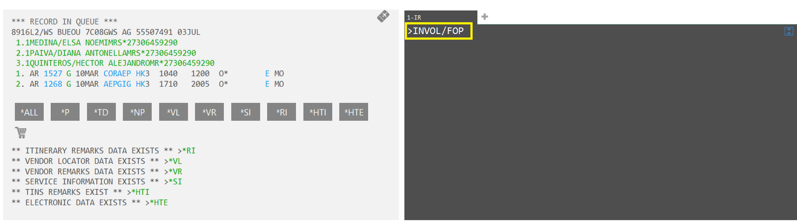
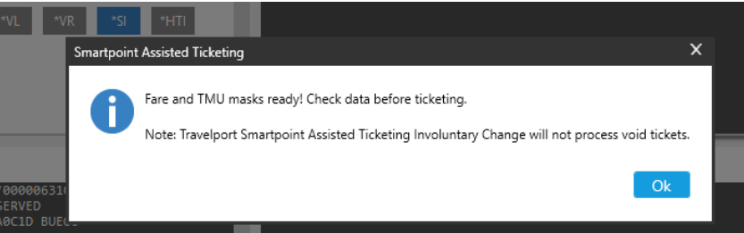
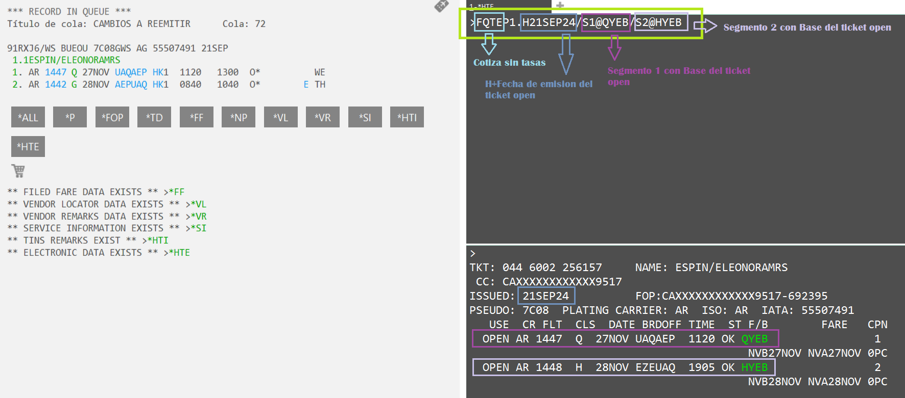
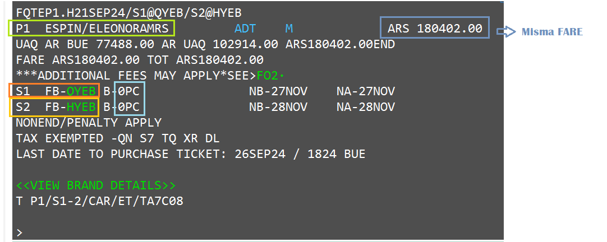
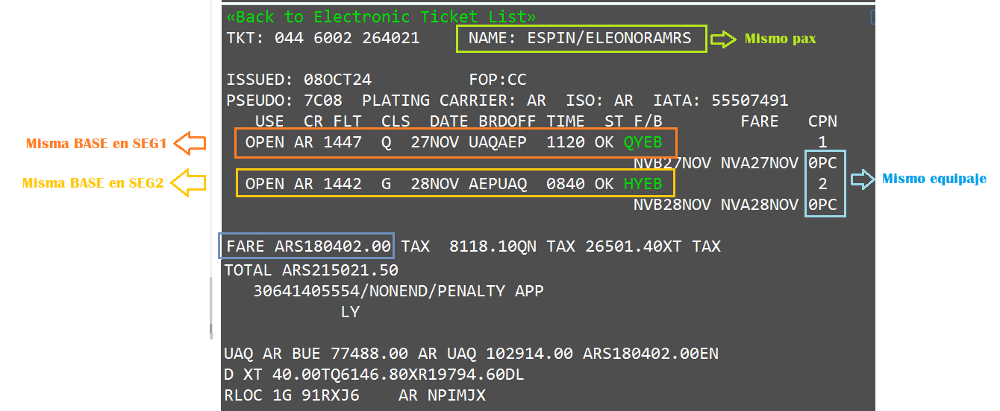

REMISIÓN NO ADC
Llamamos remisiones NO ADC a aquellas que se realizan a costo 0, ya sea por una reprogramación, correct
name o cambio con autorización de la aerolínea
PASO 1 - Verificacón de condiciones y estados de pnr
Desplegamos el itinerario y verificamos cambios en el historial

Es muy importante que verifiquen si aplica el cambio involuntario ya que cada aerolínea tiene sus
condiciones.
Les dejo el enlace para verificar los Agendar de AR ya que es la aerolínea que mas remitimos.
Agendar

Aca tenemos una salvedad importante: Si nosotros confirmamos un itinerario con el comando @ALL, es decir no tomamos lugares manualmente, es posible avanzar con la remision a pesar de no tener el 0*
PASO 2 - Creación de la mascara
En Galileo tenemos 3 maneras de crear la máscara: automatica, semiautomatica o manual
Automática
Esta herramienta cumple la función de generar la máscara de forma automática.
Generalmente si el pnr ya tuvo una remisión o bien cambió la ruta, no suele funcionar
Debemos ingresar el comando:
INVOL/FOP

Una vez que ingresamos el comando les va a arrojar la siguiente pantalla informando que la máscara fue
realizada.

Luego debemos verificar si los datos que trajo el sistema son correctos para continuar con la remisión. (paso 3)
Semiautomática
Cuando el comando de remisión automática no funciona tendremos que realizar la máscara teniendo en cuenta la informacion del ticket que usaremos para pagar dicha remision.
Para crear la máscara debemos ingresar con el siguiente comando:
FQTEPx.Hxxxxx/Sx@xxxx/Sx@xxxx
Este comando se debe ingresar por pasajero ya que cada uno se pagará de forma diferente.

Paso 3: Checklist comparativo
Una vez generada la máscara se deben verificar que estén todos los componentes cargados y que sean idénticos al
ticket open.


Paso 4: Ingreso de condiciones en la máscara
Siempre vamos a verificar que se encuentren cargados los siguientes puntos en el archivo tarifario:
COMISIÓN: Siempre 0
ENDOSO: Otorgado por la Aerolinea
CHAPA/PLACA
FEX: Nro de ticket open como FOP
Paso 6: Ingreso de la remisión
Ya con la confirmación con todos los componentes cargados en la máscara, pueden ingresar al comando de emisión de acuerdo al pseudo en el que estemos.
TKPDXD.FE60D2.6PI3: Para Iata Ricale
TKPDTDAD: Para Iata propio